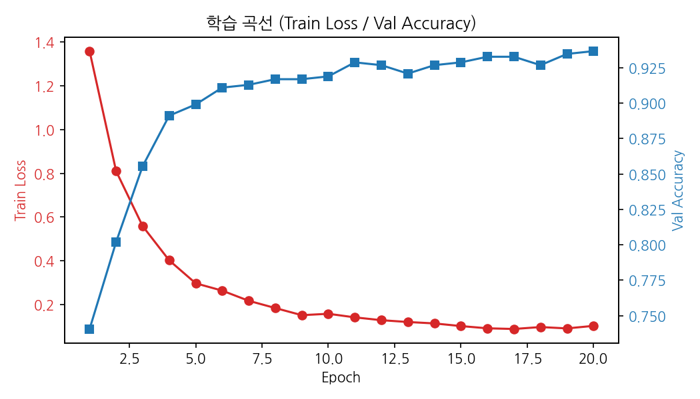
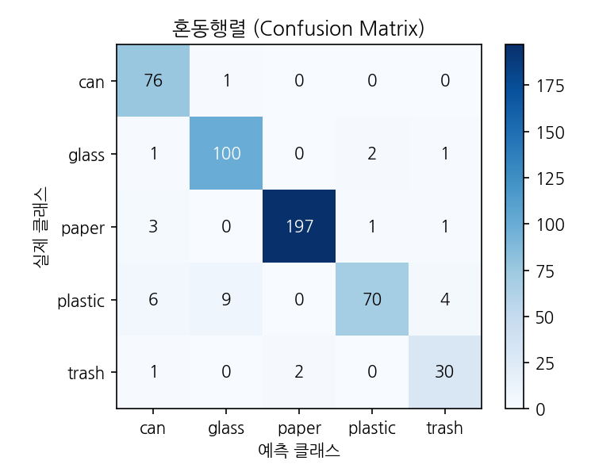
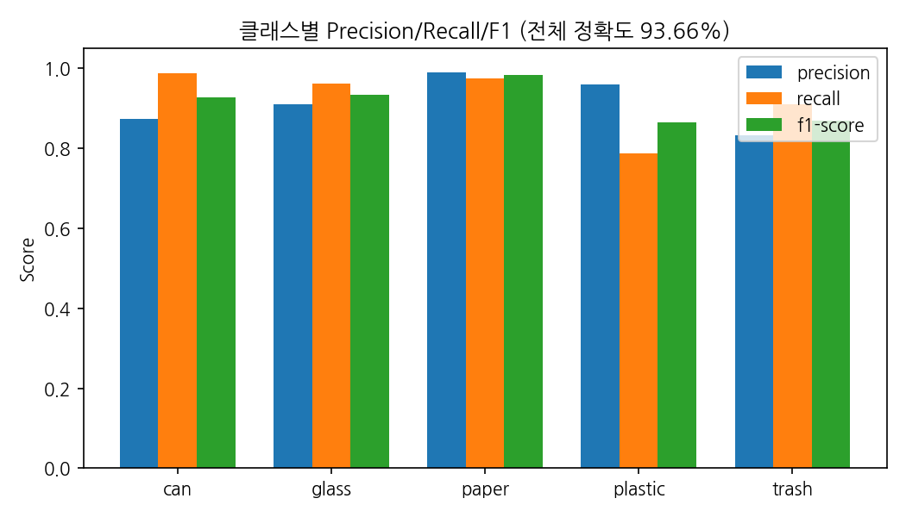

쓰레기 사진 한 장을 올리면 재질을 판별하고, 환경부 가이드라인을 근거로 어떻게 버려야 하는지 답해주는 AI입니다. 판별(비전)과 안내(LLM+문서)를 하나의 파이프라인으로 묶었습니다.
분리수거가 헷갈리는 이유는 두 가지입니다 — 이게 무슨 재질인지 모르겠고, 알아도 어떻게 버려야 하는지 모릅니다.
이미지 분류 CNN만으로는 절반만 풀립니다. "플라스틱입니다"까지는 말할 수 있어도 "라벨을 떼고 내용물을 비운 뒤 투명 페트 전용 수거함에" 같은 안내는 못 합니다. 그렇다고 LLM만 쓰면 근거 없이 그럴듯한 답을 지어낼 위험이 있습니다.
그래서 판별은 비전 모델이, 안내는 공식 문서를 검색하는 LLM이 맡는 구조로 설계했습니다. 5일이라는 일정 제약이 있어, 라벨링 작업이 필요 없는 구성(사전학습 YOLO + 폴더 분류 데이터셋 전이학습)을 선택했습니다.
사진 한 장이 답변이 되기까지 네 단계를 거칩니다. 중요한 건 각 단계가 실패해도 앱이 죽지 않는다는 점입니다 — 모든 단계에 폴백 경로를 뒀습니다.
VLM을 최종 판단자로 두되, 사용할 수 없을 때는 CNN 확신도로 보수적으로 판정합니다. 확신이 낮으면 재활용으로 안내하지 않고 일반쓰레기로 안내합니다 — 잘못된 재활용 배출이 더 큰 문제이기 때문입니다.
if vlm_result: # VLM 가능 → 최종 채택
if vlm_result["contaminated"]:
return "trash", "이물질 감지 — 씻으면 재활용 가능"
return vlm_result["material"], "VLM 판정"
if cnn_label == "trash": # VLM 불가 → CNN 폴백
return "trash", "CNN이 일반쓰레기로 분류"
if cnn_conf < 0.70: # 확신도 낮음 → 보수적 안내
return "trash", "확신도가 낮아 일반쓰레기로 안내"
return cnn_label, "CNN 판정"Stanford CS229의 공개 데이터셋 TrashNet을 내려받아 원본 6클래스를 과제에 맞는 5클래스로 재구성했습니다 (plastic / can / glass / paper / trash, 총 2,527장). ImageNet 사전학습 EfficientNet-B0의 분류 헤드만 5클래스로 교체하는 전이학습 방식입니다.
클래스 불균형이 컸습니다 — paper(997장)가 trash(137장)의 약 7배였습니다.
CrossEntropyLoss에 total / (num_classes × count) 가중치를 적용해 보정했습니다.


plastic ↔ can 혼동이 두드러진다.
trash도 가중치 적용으로 F1 80%대를 확보했다.검증 정확도는 93.66%인데, 직접 찍은 사진에서는 오분류가 반복됐습니다. 대표적으로 기름때 묻은 플라스틱 그릇을 캔으로 분류했습니다.
데이터 증강을 강화(RandomResizedCrop·강한 ColorJitter·RandomErasing)하고 에폭을 15→20으로 늘려 재학습했지만 검증 정확도는 그대로였습니다. 이 결과가 오히려 원인을 알려줬습니다 — 문제는 모델의 학습 부족이 아니라 도메인 차이였습니다. TrashNet은 흰 배경 스튜디오 사진인데 실제 사진은 배경·조명·오염이 제각각이라, 검증셋(같은 스튜디오 사진)에서는 아무리 잘해도 실사진 성능을 대변하지 못했습니다.
증강으로 도메인 격차를 메우려는 시도를 중단하고, 실사진 일반화가 강한 범용 VLM을 최종 판단자로 승격했습니다. CNN은 유지하되 폴백 경로로 내렸습니다. VLM은 재질과 이물질 여부를 한 번에 판단할 수 있어 "씻으면 재활용 가능" 같은 안내까지 가능해진 것이 부수적 이득이었습니다.
검증 정확도가 오르지 않는 것도 정보입니다. 증강을 늘려도 개선이 없다는 사실이 "학습이 부족한 게 아니라 데이터 분포 자체가 다르다"는 진단으로 이어졌습니다. 지표가 좋은데 실사용이 나쁘면, 지표가 측정하는 대상을 의심해야 합니다.
플라스틱·캔에 대해 "기본 분리배출 방법을 알려줘"라고 물으면, 문서에 분명히 있는
## 플라스틱류 분리배출 요령 섹션이 검색되지 않고
매번 도자기류·코르크따개·돋보기 같은 무관한 잡화 안내만 나왔습니다.
유리·종이 질의는 정상이었습니다.
similarity_search_with_score로 실제 점수를 찍어보니, 플라스틱 청크가
전체 82개 중 77위(거리 9.58, 1위는 4.19)로 사실상 최하위였습니다.
범인은 환경부 PDF의 26~33페이지, "분리 배출 품목 사전" 부록이었습니다. 나무젓가락부터 항아리까지 가나다순으로 나열된 표라서 "배출"·"종량제" 같은 단어가 청크 하나당 10회 이상 반복됩니다. 다국어 MiniLM 임베딩이 이 키워드 밀도에 강하게 끌려가면서, 정작 재질별 요령 문서를 계속 밀어냈습니다.
해당 부록 페이지를 인덱싱에서 제외하고 벡터DB를 재구축했습니다. 82청크 → 54청크로 줄었고, 플라스틱 질의에서 정식 "합성수지류 PET/PVC/PE" 챕터가 상위에 검색됐습니다.
# rag/ingest.py
EXCLUDED_PDF_PAGES = set(range(26, 34)) # 품목 사전 부록 제외
pdf_docs = PyPDFLoader(str(path)).load()
docs.extend(d for d in pdf_docs
if d.metadata.get("page") not in EXCLUDED_PDF_PAGES)k=4 → 8 조정도 함께 했지만, k만 올렸을 때는 전혀 개선되지 않았습니다. 근본 원인은 페이지 제외였습니다.
RAG 품질이 나쁘면 k부터 올리고 싶어지지만, 원인이 특정 문서의 구조적 노이즈(반복 키워드가 많은 색인·표·부록)라면
k를 아무리 늘려도 해결되지 않습니다. 실제 순위와 거리 값을 까보는 진단이 먼저였습니다.
VLM 판정이 동작하지 않는데 앱은 멀쩡히 CNN 폴백으로 돌아가서, 무엇이 왜 실패했는지 알 수 없었습니다.
model_not_supported: 'Qwen/Qwen2.5-VL-7B-Instruct' is not
supported by any provider you have enabled.
402 Payment Required: You have depleted your monthly
included credits.
두 가지가 겹쳤습니다. HF Inference Providers는 계정에 활성화된 provider에 따라 호출 가능한 모델이 달라지고,
무료 크레딧이 소진되면 402가 납니다. 하지만 진짜 문제는 따로 있었습니다 —
코드가 except: return None 형태로 실패를 삼키고 있어서 화면에는 아무 단서도 남지 않았습니다.
vlm_judge()가 언제나 {material, contaminated, raw} dict를 반환하고, raw에 어떤 모델이 왜 실패했는지 기록해 앱의 디버그 패널에서 바로 확인 가능하게 함material이 None이면 CNN 경로로 자연스럽게 폴백# 실패해도 dict 반환 — raw에 원인 기록
{"material": None, "contaminated": False, "raw": "API 오류: ..."}
외부 API를 폴백 설계에 넣을 때는 실패 사유를 화면이나 로그에서 바로 볼 수 있어야 합니다.
except Exception: return None처럼 조용히 삼키면 폴백이 잘 동작할수록 문제가 더 안 보입니다.
"왜 안 되지?"를 알아내는 데만 여러 번의 시행착오가 필요했습니다.
cv2 import 실패
ImportError: libGL.so.1: cannot open shared object file
ultralytics가 기본으로 끌어오는 opencv-python은 GUI(X11) 빌드입니다.
로컬에서는 문제없지만 GUI가 없는 Streamlit Cloud 이미지에는 libGL.so.1이 아예 없습니다.
1차로 packages.txt에 libgl1, libglib2.0-0을 넣었더니
이번엔 배포판(Debian trixie)에서 libglib2.0-0이 요구하는 구버전 libffi7을 못 찾아
apt 의존성 충돌이라는 2차 문제가 생겼습니다.
OS 패키지를 최소화하고, 애초에 X11을 요구하지 않는 headless 빌드로 교체했습니다.
ultralytics 다음 줄에 두어 설치 순서상 나중에 같은 cv2 경로를 덮어쓰게 했습니다.
# packages.txt
libgl1
# requirements.txt
ultralytics
opencv-python-headless모델 하나를 잘 만드는 것보다, 여러 모델을 어떻게 엮고 실패를 어떻게 다루느냐가 더 어려웠습니다. YOLO는 파인튜닝조차 하지 않았고 CNN은 결국 폴백으로 내려갔지만, 그 조합과 폴백 설계 덕분에 외부 API가 죽어도 앱은 계속 답을 냅니다. 이 프로젝트에서 실제로 설계다운 설계를 한 부분은 거기였습니다.
배포 환경의 VLM은 Hugging Face 무료 크레딧에 의존하므로, 크레딧이 소진되면 CNN 폴백으로만 동작합니다. 또 한 장에 물체 하나를 전제하고 있어 여러 물체가 섞인 사진은 가장 큰 것 하나만 판별합니다. RAG 답변의 근거 문서도 환경부 가이드라인과 생활법령 두 건으로, 지자체별 상이한 규정은 반영하지 못합니다.